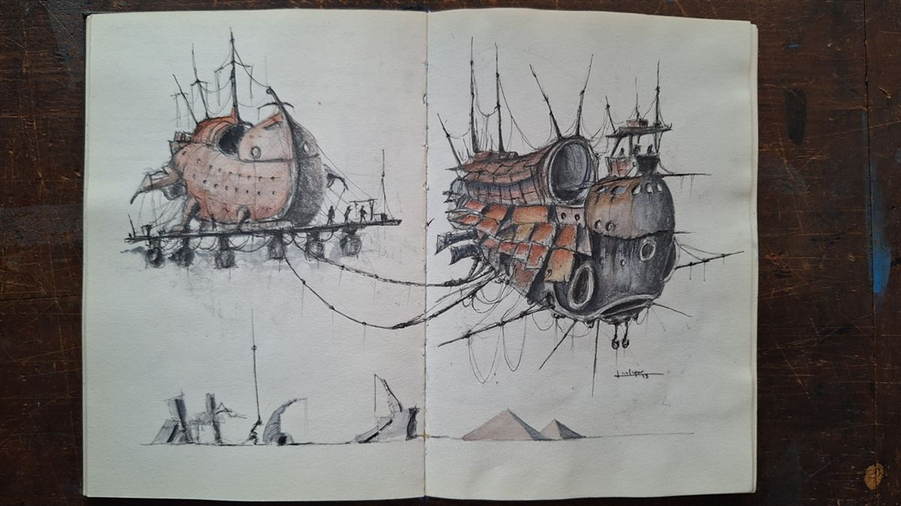

Serie 01
Air Tug
Donde el acero pesado aprende a respirar.
Una invitación a explorar la intersección entre el peso industrial y la gracia atmosférica — una colección para quienes encuentran poesía en el murmullo de un engranaje y el mandato silencioso de máquinas que desafían las leyes del cielo.
Lo que comenzó como un trazo errante de grafito evolucionó hacia una arquitectura de lo imposible. La pluma estilográfica no se limita a dibujar; esculpe el esqueleto de una maquinaria que parece recordar un futuro aún no vivido.
- Ocre oxidado y siena natural: pigmentos que bañan el metal, sugiriendo el paso del tiempo.
- Negro humo y carbón: tinta definiendo cada perno, cada unión, cada secreto mecánico.
- Grises atmosféricos: lavados pálidos que crean la ilusión del aire mismo.